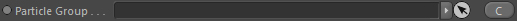
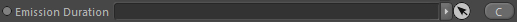
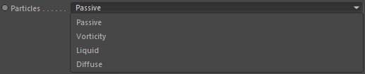
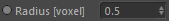
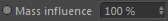
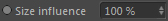
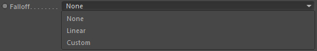
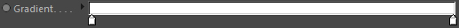

Parameters
Constraints
Parameters
Particle Group

Link the Particle Group which contains the source particles.
Emission Duration

Takes a duration node that defines when the emitter is allowed to operate. This node is optional.
Channel Values
Takes several channel/value containers that define the target channels and the values/properties that should be emitted into them. This is required.
Particles

Defines the particle type to use from the source particle group.
Radius [voxel]

Defines the radius around each particle which should be used to find neighboring grid cells that the particle will affect. The radius is given in grid cell/voxel size.
Time integrated
The values emitted can be time integrated. This means the current time step (or sub time step) is multiplied with the emitted value, to correctly
synchronize it with the simulation framework (just like smoke is emitted time integrated).
If you are for example only generating variable viscosity grids with the emitter, you wouln't want it activated because you want the particles
to write a direct viscosity value (not linked to time).
Mass influence

If the particles carry a mass property (scalar), the intensity of the value can be based on that mass. A higher mass would result in a higher splatted value.
Size influence

If the particles carry a radius property (scalar), the intensity of the splatted value can be based on that size. A lower particle radius would result in a lower splatting value.
Falloff

In the range of the Radius [voxel] (imagine a sphere around each particle) you can define a spatial falloff.
None
No falloff is used. Grid cells that are affected get the full intensity value.
Linear
A linear falloff is used. The further away a grid cell is from the particle the lower the value will be it receives.
Custom
Allows a user-defined value being distributed to the affected cells. Once set, a 'Gradient' unhides in the node's attributes and can be used to define the falloff.
Gradient

Only available if 'Falloff' is set to 'Custom'.
Here you can define a custom falloff.